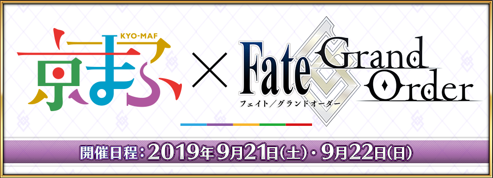
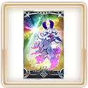

感謝您使用「Fate/Grand Order」。
「Fate/Grand Order」將在2019年9月21日(六)・9月22日(日)舉辦
「京都國際動漫展2019」(以下、京漫展2019)出展。
◆「Fate/Grand Order」嘉賓談話 in 京漫展2019情報◆
與「Fate/Grand Order」出演聲優的川澄綾子、高橋李依、悠木碧一起，送上有關遊戲的情報・趣聞！
時間:9月22日(日) 14:25～15:05
場所:みやこめっせ地下1階 オープンステージ
出演:川澄綾子、高橋李依、悠木碧
※無論誰都能觀賞的舞台。
【「京都國際動漫展2019」概要】
舉辦場所:みやこめっせ(メイン会場)
京都国際マンガミュージアム(第2会場)
東映太秦映画村(特別会場)
舉辦期間:2019年9月21日(六)・9月22日(日) ※最終入場皆是結束30分前
みやこめっせ為9:00～17:00 ※22日(日)為16:00
京都国際マンガミュージアム為9:00～19:00
東映太秦映画村為9:00～17:00
入場券:http://kyomaf.kyoto/tickets/
官方網站:http://kyomaf.kyoto/
【9月13日(五) 17:00追記】
在「京漫展2019」舉辦的舞台活動決定播送。
『Fate/Grand Order』嘉賓談話 in 京漫展2019
9月22日(日) 14:25～15:05
niconico生放送
https://live.nicovideo.jp/gate/lv321780954
YouTube
https://www.youtube.com/watch?v=ECHRGhaz5Wc
Periscope(ペリスコープ)
在「Fate/Grand Order」官方Twitter播送。
https://twitter.com/fgoproject
AbemaTV
https://abema.tv/channels/abema-anime-3/slots/DEDyikcMQNtQjR
【9月22日(日) 14:30追記】
在2019年9月22日(日)「京漫展2019」內舉辦也在niconico生放送播送的「『Fate/Grand Order』嘉賓談話 in 京漫展2019」發表了有關「Fate/Grand Order」的新情報。
以下介紹一部份新情報。
◆為了記念至「京漫展2019」的出展贈送聖晶石10個！◆
為了記念至「京漫展2019」的出展，向2019年9月23日(一) 2:59前通過「特異點F 炎上汙染都市 冬木」的御主贈送聖晶石10個。
◆【期間限定】「京漫展2019出展記念Pick Up召喚(每日交替)」◆
為了記念至2019年9月21日(六)・9月22日(日)舉辦中「京漫展2019」的出展，舉辦「京漫展2019出展記念Pick Up召喚(每日交替)」。

◆TV動畫「Fate/Grand Order -絕對魔獸戰線巴比倫尼亞-」放送記念宣傳活動舉辦預定◆
為了記念自2019年10月2日(三) 17:00(預定)「Fate/Grand Order -絕對魔獸戰線巴比倫尼亞-」的動畫放送，發表了要實施宣傳活動。

■舉辦TV動畫「Fate/Grand Order -絕對魔獸戰線巴比倫尼亞-」放送記念轉推宣傳活動！
2019年9月22日(日) 14:30投稿的『TV動畫「Fate/Grand Order -絕對魔獸戰線巴比倫尼亞-」放送記念宣傳活動』推特，達成10萬轉推的話贈送★4(SR)視覺圖概念禮裝與聖晶石30個！
リツイート期間:2019年9月22日(日) 15:30～10月4日(五) 22:59
■從TV動畫「Fate/Grand Order -絕對魔獸戰線巴比倫尼亞-」放送記念Pick Up召喚(每日交替)Pick Up概念禮裝贈送1張！
使用可靠在宣傳活動期間中登入後入手的特別票券，可從6張★5(SSR)期間限定概念禮裝選擇1張交換！
■TV動畫「Fate/Grand Order -絕對魔獸戰線巴比倫尼亞-」放送記念特別登入獎勵
在舉辦期間中7次登入(1天算1次)的話贈送報酬！
舉辦期間:2019年10月3日(四) 3:00(預定)～10月10日(四) 2:59
| 登入次數 | 贈送內容 | ||
|---|---|---|---|
| 第1次 |

|
友情點數 7,000pt | |
| 第2次 |

|
睿智的猛火ALL★4(SR) 7張 | |
| 第3次 |

|
白銀果實 7個 | |
| 第4次 | 魔力稜鏡 70個 | ||
| 第5次 |

|
英靈結晶・星之芙芙ALL★3(HP) 7張 | |
| 第6次 |  | 英靈結晶・太陽之芙芙ALL★3(ATK) 7張 | |
| 第7回目 |

|
呼符 7張 | |
■TV動畫「Fate/Grand Order -絕對魔獸戰線巴比倫尼亞-」回想關卡舉辦預定！
| 關卡名稱 | 關卡舉辦期間 |
|---|---|
| TV動畫「FGO -絕對魔獸戰線巴比倫尼亞-」Ep. 1回想關卡 | 10月5日(六) 23:00(預定)～ 10月12日(六) 22:59 |
| TV動畫「FGO -絕對魔獸戰線巴比倫尼亞-」Ep. 2回想關卡 | 10月12日(六) 23:00(預定)～ 10月19日(六) 22:59 |
| TV動畫「FGO -絕對魔獸戰線巴比倫尼亞-」Ep. 3回想關卡 | 10月19日(六) 23:00(預定)～ 10月26日(六) 22:59 |
■預定在御主任務追加【TV動畫「Fate/Grand Order -絕對魔獸戰線巴比倫尼亞-」放送記念限定任務】！
| 任務名稱 | 任務達成報酬 | ||
|---|---|---|---|
| 【TV動畫「FGO -絕對魔獸戰線巴比倫尼亞-」放送記念】 靠戰利品獲得『龍之牙』1個 |

|
聖晶石 1個 | |
| 【TV動畫「FGO -絕對魔獸戰線巴比倫尼亞-」放送記念】 靠戰利品獲得『追憶的貝殼』1個 |
|
聖晶石 1個 | |
| 【TV動畫「FGO -絕對魔獸戰線巴比倫尼亞-」放送記念】 靠戰利品獲得『混沌之爪』1個 |
|
聖晶石 1個 | |
| 【TV動畫「FGO -絕對魔獸戰線巴比倫尼亞-」放送記念】 擊倒20名持有『猛獸』特性的敵人 |
|
聖晶石 1個 | |
| 【TV動畫「FGO -絕對魔獸戰線巴比倫尼亞-」放送記念】 擊倒20名持有『龍』特性的敵人 |
|
聖晶石 1個 | |
| 【TV動畫「FGO -絕對魔獸戰線巴比倫尼亞-」放送記念】 擊倒20名『鬼魂』系的敵人 |
|
聖晶石 1個 | |
| 【TV動畫「FGO -絕對魔獸戰線巴比倫尼亞-」放送記念】 擊倒3名持有『超巨大』特性的敵人 |
|
聖晶石 1個 | |
| 【TV動畫「FGO -絕對魔獸戰線巴比倫尼亞-」放送記念】 通過3次『森林』場景的自由關卡 |
|
聖晶石 1個 | |
| 【TV動畫「FGO -絕對魔獸戰線巴比倫尼亞-」放送記念】 通過3次『火炎』場景的自由關卡 |
|
聖晶石 1個 | |
| 【TV動畫「FGO -絕對魔獸戰線巴比倫尼亞-」放送記念】 通過所有的任務 |
|
聖晶石 1個 | |
■預定以期間限定開放所有「蒐集種火」及「修練場」關卡全星期份！
■主線關卡的友情點數獲得量期間限定2倍！
■在第七特異點登場從者的強化大成功＆極大成功發生率2倍！
■在第七特異點登場從者的「強化關卡」「幕間物語」AP消耗1/2！
■TV動畫「Fate/Grand Order -絕對魔獸戰線巴比倫尼亞-」放送記念Pick Up召喚(每日交替)舉辦預定！ Pick Up對象從者為「★5(SSR)伊絲塔(Archer)」「★5(SSR)恩奇杜」「★4(SR)吉爾伽美什(Caster)」「★4(SR)美杜莎(Lancer)」「★3(R)牛若丸(Rider)」5位。
詳情請等待續報。
◆預定舉辦期間限定活動「復刻:神秘之國ＯＮＩＬＡＮＤ!! ～鬼王與卡姆伊的黃金～ 輕量版」！◆
發表了期間限定活動「復刻:神秘之國ＯＮＩＬＡＮＤ!! ～鬼王與卡姆伊的黃金～ 輕量版」自2019年10月11日(五) 17:00(預定)舉辦。
詳情請等待續報。
另外，也實施主線關卡第1部與第2部 第1章～第2章的AP消耗以期間限定變成1/4的宣傳活動。
今後也請多多指教「Fate/Grand Order」。